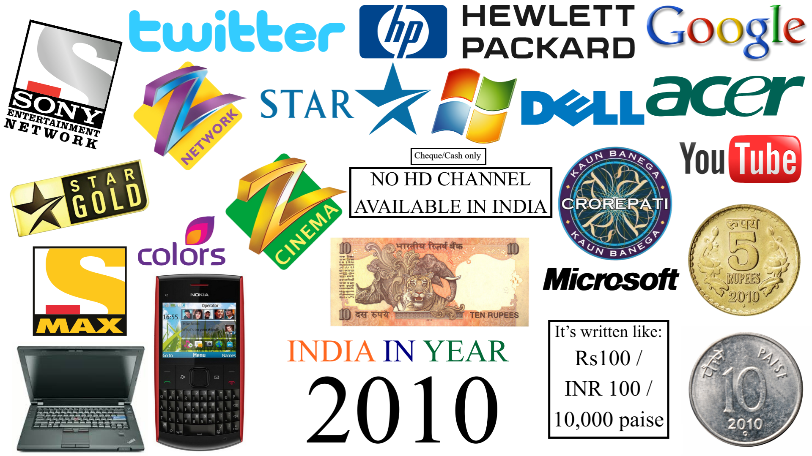
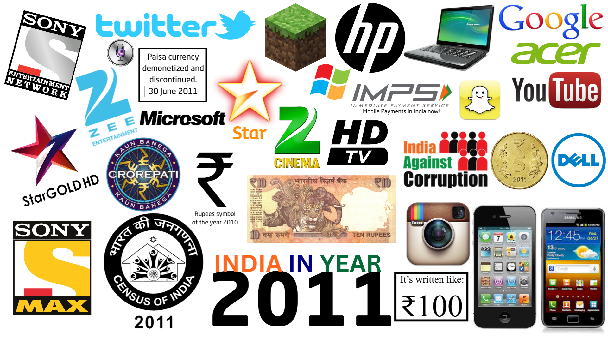
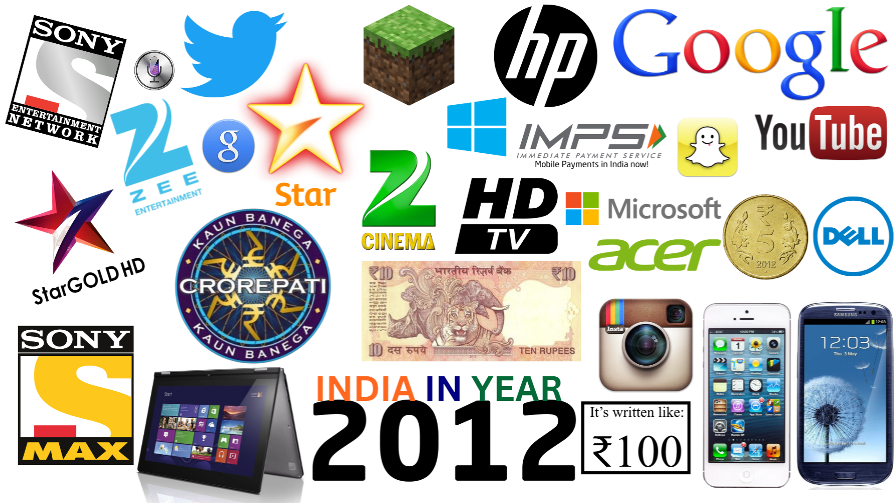

In this post, I will share my thoughts on what India was like in 2010 and 2011.
I have summarised them in the form of collages. Additionally, as a bonus, I have
also prepared a collage for the year 2012. These images also signify the changes or new introductions in that particular year.
The year 2010:
-
Technology:
Keypad phones (Nokia QWERTY), bulky old design laptops
-
Internet & platforms:
Twitter's old logo, YouTube still a secondary entertainment with classic layout and logo
-
Television:
SD channels only,
explicitly “No HD channel available in India”
-
Brands & design:
TV channels and their holding networks had very old-looking logos.
Star Gold was actually "GOLD" in colour.
Laptop brands also used older logos: HP (1979), Dell (1992), Acer (2001).
-
Currency:
The currency was old and did not carry the Rupee symbol (minted until early 2011).
Only cash or cheques were used. Paisa currency was still alive and usable,
symbolised by the 10 paise coin.
- Let’s take a case from the year 2010. Suppose you wanted to go on a holiday for solitude to a hotel. You would have to call the hotel, and they would ask you to prepare a cheque for a certain amount as specified by the hotel. Then they would ask someone from their hotel’s office, located in your locality to collect it. You would have to wait for someone to come and collect the cheque. You see, it was a very old-fashioned process.
- KBC was not a cultural event yet. Why? It was because, even though KBC received a rave-styled redesign with the introduction of a timer and a new logo at the start of Season 4 on 11 October 2010, the show featured Western-styled music, the questions were displayed only in English on screen, and many other Western-influenced elements. All of this meant that it did not feel like a cultural event.
-
Thus, to conclude, 2010 was the last year to feel old and classic in India.
The year 2011:
-
HD Enters the Indian Television Entertainment:
Star Plus (15 April 2011, first native HD channel, with others in Star Asli HD package), Zee TV HD (15 August 2011), Colors HD (24 October 2011).
-
Touchscreen expansion:
iPhone, Samsung Galaxy — touchscreen computing becomes more common
-
Social media explosion:
Twitter bird icon, YouTube's new logo and brand new interface. The popular social media apps, Instagram (October 2010) and Snapchat (September 2011) launched and gained popularity in this year.
-
National moments:
Census of India 2011 (the latest official census, conducted from 9-28 February 2011), Anti-Corruption Movement 2011 (changing the mindset of the Indian citizens)
-
Design language:
More cleaner, and modern looking rebranding of laptop making competitors, which are HP, Dell, Acer.
The TV channel network’s competitors —Zee, Sony, and Star also modernised their logos. Star Gold is no longer "GOLD" in colour but the rebrand did made the channel youthful and modern (10 September 2011).
-
Currency reform:
Paise discontinued (30 June 2011), ₹ symbol officially adopted (2010).
Notes (23 Sept 2011) and coins (8 July 2011) now carry the symbol.
- Let’s take the same case of a hotel booking, but in 2011. At that time, the person who had to pay the amount to the hotel could say, “I can pay through IMPS” (launched on 22 November 2010). The payment could be made either through SMS or through their respective banking app.
You can see how simple it had already become by 2011. This Immediate Payment Service (IMPS) is almost used by everyone today because the popular UPI runs as an open-source application programming interface (API) on top of IMPS. In other words, UPI is the interface (what you see), and IMPS is the system responsible for processing the transaction.
- KBC Season 5 was launched on 15 August 2011, and with this season, Indian-styled beats were introduced into the music. The questions were now shown in Hindi along with English, one at a time, along with other minor rule changes. This made the show more interesting and more culturally connected.
-
2011 also marks the start of the 68th tricennial and Generation Alpha.
-
Thus, to conclude, 2011 was the year of
"RAPID MODERNISATION" — the real turning point, both for India as well as the World.
The year 2012 (bonus):
- Twitter's logo changed – Wordmark completely removed, bird icon simplified
- Introduction of 360-degree laptops
- Microsoft finally rebrands after 1987 and 2010
-
India wasn’t “becoming modern” anymore in 2012 — the year was started as a modern year, just it further refined the modern India.
-
HD expands in the Indian Television Entertainment:
Sony Entertainment Telivision HD launched on 28 May 2012.
Conclusion:
-
India didn’t slowly modernize — it pivoted, and 2011 was the pivot.

India in the year 2010

India in the year 2011

India in the year 2012
© 2025 Niral Bhatt. All rights reserved.